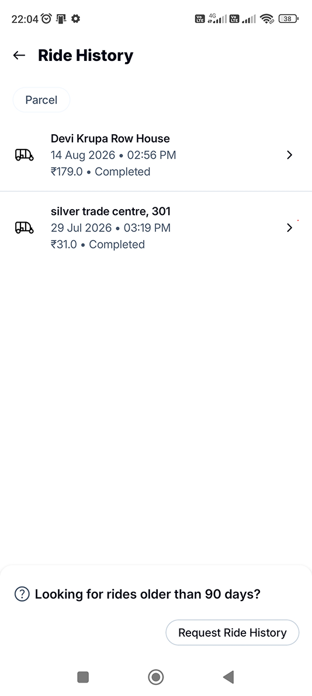
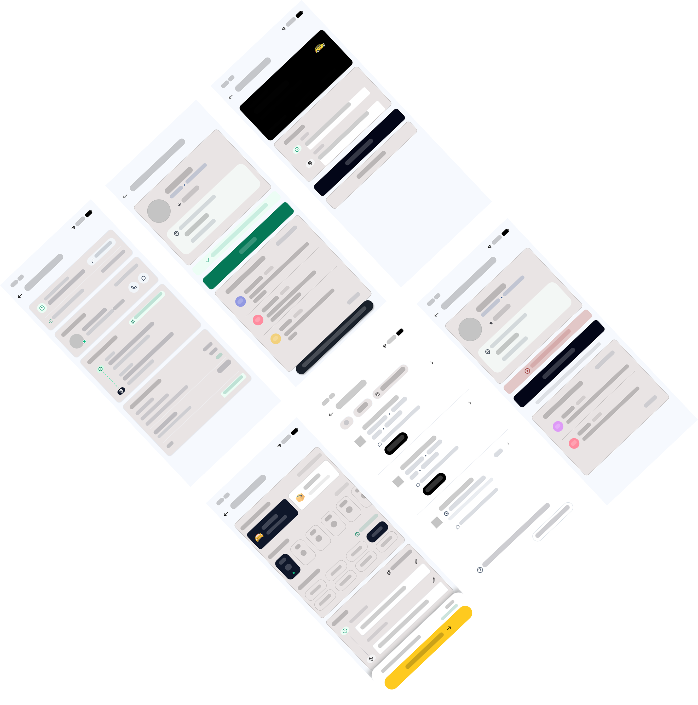
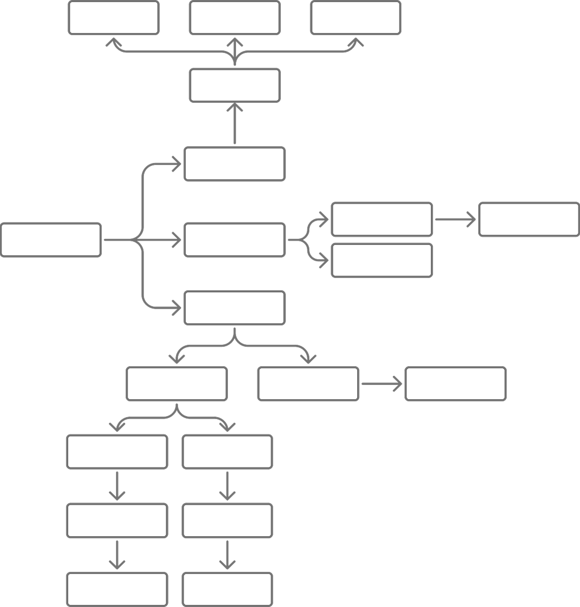
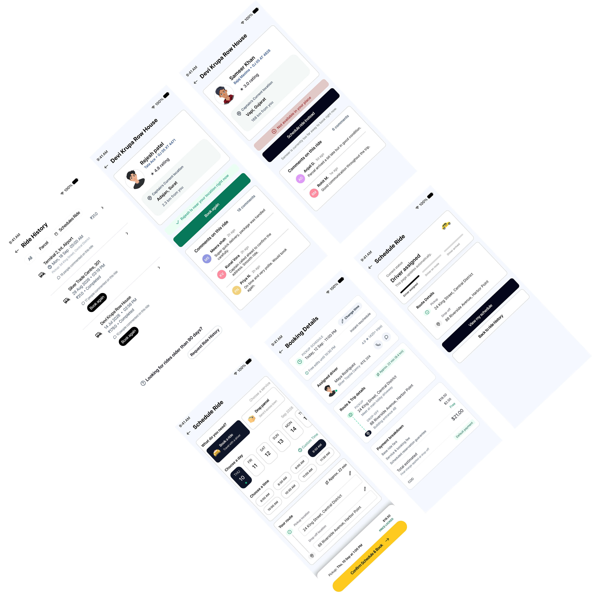

INTRO
Feature Enhancement for Rapido
I improved the ride-booking experience of a transportation app by redesigning the ride history section and introducing new features for a more flexible booking flow. The project focused on adding scheduled ride booking so users can plan trips in advance, and a rebook feature that lets users quickly book a previous rider again if they prefer.
PROBLEM
1. Sometimes it’s hard to find good captains — they can be rude, and sometimes they raise the price unexpectedly.
2. Not able to book a captain on time — the process takes a lot of time.
SOLUTION
1. Rebook Your Favorite Captain – I added a feature that lets users rebook a captain they previously rode with if they liked their behavior. This gives riders more control over their experience and helps build trust between riders and captains.
2. Scheduled Booking & Last-Minute Cancellation – I introduced a schedule booking option so users can plan rides ahead of time, along with a last-minute cancel feature for when plans change unexpectedly. This adds flexibility and convenience to the booking flow.
3. Captain Profile Comments – I added a comment section to each captain’s profile that appears whenever someone rebooks them. This way, future riders can read feedback from previous passengers and know whether a captain is reliable and pleasant before confirming a ride.
BEFORE & AFTER
This is the starting screen. From here, I identified an opportunity to introduce a connected feature that improves the overall experience and creates a more seamless workflow.

BEFORE AFTERWIREFRAME
This wireframe is the result of multiple iterations and exploration rounds. I experimented with different layouts, navigation patterns, and content hierarchies before arriving at this final version. Each iteration helped refine the user flow — from ride scheduling to rebooking and ride history — ensuring a clear, intuitive experience that balances functionality with simplicity.

USER FLOW
this is user flow starts from ride history. this user flow tells how each screens and buttons are connected

UI SCREENS
this is user flow starts from ride history. this user flow tells how each screens and buttons are connected
